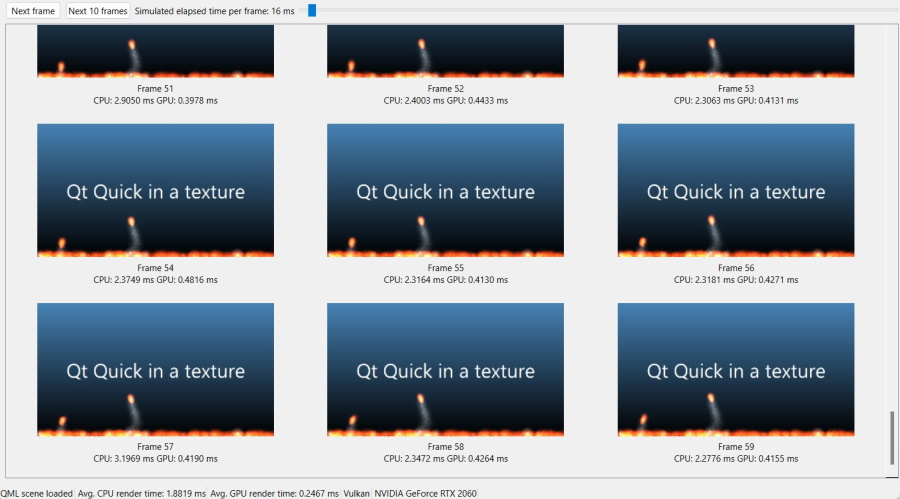

QQuickRenderControl RHI Example
Shows how to render a Qt Quick scene into a QRhiTexture.

This example demonstrates how to set up a Qt Quick scene that has its rendering redirected into a QRhiTexture. The application is then free to do whatever it wants with the resulting texture from each frame. This example is a QWidget-based application that performs a readback of the image data, and then displays the collected per-frame renders with CPU and GPU-based timing information for each.
By using Qt's 3D graphics API abstraction, this example is not tied to any particular graphics API. At startup, a dialog is shown with the platforms' potentially supported 3D APIs.
QDialog apiSelect;
QVBoxLayout *selLayout = new QVBoxLayout;
selLayout->addWidget(new QLabel(QObject::tr("Select graphics API to use")));
QListWidget *apiList = new QListWidget;
QVarLengthArray<QSGRendererInterface::GraphicsApi, 5> apiValues;
#ifdef Q_OS_WIN
apiList->addItem("Direct3D 11");
apiValues.append(QSGRendererInterface::Direct3D11);
apiList->addItem("Direct3D 12");
apiValues.append(QSGRendererInterface::Direct3D12);
#endif
#if defined(Q_OS_MACOS) || defined(Q_OS_IOS)
apiList->addItem("Metal");
apiValues.append(QSGRendererInterface::Metal);
#endif
#if QT_CONFIG(vulkan)
apiList->addItem("Vulkan");
apiValues.append(QSGRendererInterface::Vulkan);
#endif
#if QT_CONFIG(opengl)
apiList->addItem("OpenGL / OpenGL ES");
apiValues.append(QSGRendererInterface::OpenGL);
#endif
if (apiValues.isEmpty()) {
QMessageBox::critical(nullptr, QObject::tr("No 3D graphics API"), QObject::tr("No 3D graphics APIs are supported in this Qt build"));
return 1;
}
Note: It is not guaranteed that all selections will be functional on a given platform.
Once a selection is made, a QML file is loaded. However, we will not simply create a QQuickView instance and show() it. Rather, the QQuickWindow that manages the Qt Quick scene is never shown on-screen. Instead, the application takes control over when and to where render, via QQuickRenderControl.
void MainWindow::load(const QString &filename) { reset(); m_renderControl.reset(new QQuickRenderControl); m_scene.reset(new QQuickWindow(m_renderControl.get())); // enable lastCompletedGpuTime() on QRhiCommandBuffer, if supported by the underlying 3D API QQuickGraphicsConfiguration config; config.setTimestamps(true); m_scene->setGraphicsConfiguration(config); #if QT_CONFIG(vulkan) if (m_scene->graphicsApi() == QSGRendererInterface::Vulkan) m_scene->setVulkanInstance(m_vulkanInstance); #endif m_qmlEngine.reset(new QQmlEngine); m_qmlComponent.reset(new QQmlComponent(m_qmlEngine.get(), QUrl::fromLocalFile(filename))); if (m_qmlComponent->isError()) { for (const QQmlError &error : m_qmlComponent->errors()) qWarning() << error.url() << error.line() << error; QMessageBox::critical(this, tr("Cannot load QML scene"), tr("Failed to load %1").arg(filename)); reset(); return; }
Once the object tree is instantiated, the root item (a Rectangle) is queried, its size is ensured to be valid and then propagated.
Note: Scenes that use the Window element within the object tree are not supported.
QObject *rootObject = m_qmlComponent->create();
if (m_qmlComponent->isError()) {
for (const QQmlError &error : m_qmlComponent->errors())
qWarning() << error.url() << error.line() << error;
QMessageBox::critical(this, tr("Cannot load QML scene"), tr("Failed to create component"));
reset();
return;
}
QQuickItem *rootItem = qobject_cast<QQuickItem *>(rootObject);
if (!rootItem) {
// Get rid of the on-screen window, if the root object was a Window
if (QQuickWindow *w = qobject_cast<QQuickWindow *>(rootObject))
delete w;
QMessageBox::critical(this,
tr("Invalid root item in QML scene"),
tr("Root object is not a QQuickItem. If this is a scene with Window in it, note that such scenes are not supported."));
reset();
return;
}
if (rootItem->size().width() < 16)
rootItem->setSize(QSizeF(640, 360));
m_scene->contentItem()->setSize(rootItem->size());
m_scene->setGeometry(0, 0, rootItem->width(), rootItem->height());
rootItem->setParentItem(m_scene->contentItem());
m_statusMsg->setText(tr("QML scene loaded"));
At this point there are no rendering resources initialized, i.e., nothing has been done with the native 3D graphics API yet. A QRhi is instantiated only in the next step, and that is what triggers setting up the Vulkan, Metal, Direct 3D, etc. rendering system under the hood.
const bool initSuccess = m_renderControl->initialize();
if (!initSuccess) {
QMessageBox::critical(this, tr("Cannot initialize renderer"), tr("QQuickRenderControl::initialize() failed"));
reset();
return;
}
const QSGRendererInterface::GraphicsApi api = m_scene->rendererInterface()->graphicsApi();
switch (api) {
case QSGRendererInterface::OpenGL:
m_apiMsg->setText(tr("OpenGL"));
break;
case QSGRendererInterface::Direct3D11:
m_apiMsg->setText(tr("D3D11"));
break;
case QSGRendererInterface::Direct3D12:
m_apiMsg->setText(tr("D3D12"));
break;
case QSGRendererInterface::Vulkan:
m_apiMsg->setText(tr("Vulkan"));
break;
case QSGRendererInterface::Metal:
m_apiMsg->setText(tr("Metal"));
break;
default:
m_apiMsg->setText(tr("Unknown 3D API"));
break;
}
QRhi *rhi = m_renderControl->rhi();
if (!rhi) {
QMessageBox::critical(this, tr("Cannot render"), tr("No QRhi from QQuickRenderControl"));
reset();
return;
}
m_driverInfoMsg->setText(QString::fromUtf8(rhi->driverInfo().deviceName));
Note: This application uses a model where Qt creates an instance of QRhi. This is not the only possible approach: if the application maintains its own QRhi (and so OpenGL context, Vulkan device, etc.), then Qt Quick can be requested to adopt and use that existing QRhi. That is done via passing a QQuickGraphicsDevice created by QQuickGraphicsDevice::fromRhi() to QQuickWindow, similarly to how QQuickGraphicsConfiguration is set in the snippet above. Consider for example the case of wanting to use the Qt Quick rendered textures in a QRhiWidget: in that case the QRhiWidget's QRhi will need to passed on to Qt Quick, instead of letting Qt Quick create its own.
Once QQuickRenderControl::initialize() succeeds, the renderer is live and ready to go. For that, we need a color buffer to render into.
QQuickRenderTarget is a lightweight implicitly-shared class that carries (but those not own) various sets of native or QRhi objects that describe textures, render targets, or similar. Calling setRenderTarget() on the QQuickWindow (remember that we have a QQuickWindow that is not visible on-screen) is what triggers redirecting the Qt Quick scene graph's rendering into the texture provided by the application. When working with QRhi (and not with native 3D API objects such as OpenGL texture IDs or VkImage objects), the application should set up a QRhiTextureRenderTarget and then pass it to Qt Quick via QQuickRenderTarget::fromRhiRenderTarget().
const QSize pixelSize = rootItem->size().toSize(); // no scaling, i.e. the item size is in pixels
m_texture.reset(rhi->newTexture(QRhiTexture::RGBA8, pixelSize, 1,
QRhiTexture::RenderTarget | QRhiTexture::UsedAsTransferSource));
if (!m_texture->create()) {
QMessageBox::critical(this, tr("Cannot render"), tr("Cannot create texture object"));
reset();
return;
}
m_ds.reset(rhi->newRenderBuffer(QRhiRenderBuffer::DepthStencil, pixelSize, 1));
if (!m_ds->create()) {
QMessageBox::critical(this, tr("Cannot render"), tr("Cannot create depth-stencil buffer"));
reset();
return;
}
QRhiTextureRenderTargetDescription rtDesc(QRhiColorAttachment(m_texture.get()));
rtDesc.setDepthStencilBuffer(m_ds.get());
m_rt.reset(rhi->newTextureRenderTarget(rtDesc));
m_rpDesc.reset(m_rt->newCompatibleRenderPassDescriptor());
m_rt->setRenderPassDescriptor(m_rpDesc.get());
if (!m_rt->create()) {
QMessageBox::critical(this, tr("Cannot render"), tr("Cannot create render target"));
reset();
return;
}
m_scene->setRenderTarget(QQuickRenderTarget::fromRhiRenderTarget(m_rt.get()));
Note: Always provide a depth-stencil buffer for Qt Quick since both of these buffers and the depth and stencil test may get utilized by the Qt Quick scenegraph when rendering.
The main render loop is the following. This also shows how to perform GPU->CPU readbacks of images. Once a QImage is available, the QWidget-based user interface updates accordingly. We will omit diving into the details for that here.
The example also demonstrates a simple way of measuring the cost of rendering a frame on the CPU and the GPU. Offscreen-rendered frames are well suited for this due to certain internal QRhi behavior, which implies that operations that otherwise are asynchronous (in the sense that they complete only when rendering a subsequent frame), are guaranteed to be ready once QRhi::endOffscreenFrame() (i.e., QQuickRenderControl::endFrame()) returns. We use this knowledge when reading back the texture, and it applies also to GPU timestamps as well. That is why the application can display the GPU time for each frame, while guaranteeing that the time actually refers to that particular frame (not an earlier one). See lastCompletedGpuTime() for details around GPU timings. The CPU side timings are taken using QElapsedTimer.
QElapsedTimer cpuTimer;
cpuTimer.start();
m_renderControl->polishItems();
m_renderControl->beginFrame();
m_renderControl->sync();
m_renderControl->render();
QRhi *rhi = m_renderControl->rhi();
QRhiReadbackResult readResult;
QRhiResourceUpdateBatch *readbackBatch = rhi->nextResourceUpdateBatch();
readbackBatch->readBackTexture(m_texture.get(), &readResult);
m_renderControl->commandBuffer()->resourceUpdate(readbackBatch);
m_renderControl->endFrame();
const double gpuRenderTimeMs = m_renderControl->commandBuffer()->lastCompletedGpuTime() * 1000.0;
const double cpuRenderTimeMs = cpuTimer.nsecsElapsed() / 1000000.0;
// m_renderControl->begin/endFrame() is based on QRhi's
// begin/endOffscreenFrame() under the hood, meaning it does not do
// pipelining, unlike swapchain-based frames, and therefore the readback is
// guaranteed to complete once endFrame() returns.
QImage wrapperImage(reinterpret_cast<const uchar *>(readResult.data.constData()),
readResult.pixelSize.width(), readResult.pixelSize.height(),
QImage::Format_RGBA8888_Premultiplied);
QImage result;
if (rhi->isYUpInFramebuffer())
result = wrapperImage.mirrored();
else
result = wrapperImage.copy();
One important piece is the stepping of Qt Quick animations. As we do not have an on-screen window that can drive the animation system either via measuring elapsed time, an ordinary timer, or presentation rate-based throttling, redirecting the Qt Quick rendering often implies that the driving of animations needs to be taken over by the application. Otherwise, animations function based on a plain system timer, but the actual elapsed time will often have nothing to do with what the offscreen-rendered scene is expected to perceive. Consider rendering 5 frames in a row, in a tight loop. How the animations in those 5 frames move depends on the speed with which the CPU executes the loop iterations. That is almost never ideal. To ensure consistent animations, install a custom QAnimationDriver. While this is an undocumented (but public) API meant for advanced users, the example here provides a simple example of using it.
class AnimationDriver : public QAnimationDriver { public: AnimationDriver(QObject *parent = nullptr) : QAnimationDriver(parent), m_step(16) { } void setStep(int milliseconds) { m_step = milliseconds; } void advance() override { m_elapsed += m_step; advanceAnimation(); } qint64 elapsed() const override { return m_elapsed; } private: int m_step; qint64 m_elapsed = 0; };
The application has a QSlider that can be used to change the animation step value from the default 16 milliseconds to something else. Note the call to the setStep() function of our QAnimationDriver subclass.
QSlider *animSlider = new QSlider;
animSlider->setOrientation(Qt::Horizontal);
animSlider->setMinimum(1);
animSlider->setMaximum(1000);
QLabel *animLabel = new QLabel;
QObject::connect(animSlider, &QSlider::valueChanged, animSlider, [this, animLabel, animSlider] {
if (m_animationDriver)
m_animationDriver->setStep(animSlider->value());
animLabel->setText(tr("Simulated elapsed time per frame: %1 ms").arg(animSlider->value()));
});
animSlider->setValue(16);
QCheckBox *animCheckBox = new QCheckBox(tr("Custom animation driver"));
animCheckBox->setToolTip(tr("Note: Installing the custom animation driver makes widget drawing unreliable, depending on the platform.\n"
"This is due to widgets themselves relying on QPropertyAnimation and similar, which are driven by the same QAnimationDriver.\n"
"In any case, the functionality of the widgets are not affected, just the rendering may lag behind.\n"
"When not checked, Qt Quick animations advance based on the system time, i.e. the time elapsed since the last press of the Next button."));
QObject::connect(animCheckBox, &QCheckBox::stateChanged, animCheckBox, [this, animCheckBox, animSlider, animLabel] {
if (animCheckBox->isChecked()) {
animSlider->setEnabled(true);
animLabel->setEnabled(true);
m_animationDriver = new AnimationDriver(this);
m_animationDriver->install();
m_animationDriver->setStep(animSlider->value());
} else {
animSlider->setEnabled(false);
animLabel->setEnabled(false);
delete m_animationDriver;
m_animationDriver = nullptr;
}
});
animSlider->setEnabled(false);
animLabel->setEnabled(false);
controlLayout->addWidget(animCheckBox);
controlLayout->addWidget(animLabel);
controlLayout->addWidget(animSlider);
Note: Installing the custom animation driver is made optional via the animCheckBox check box. This allows comparing the effect of having and not having a custom animation driver installed. In addition, on some platforms (and perhaps depending on the theme), having the custom driver enabled may lead to lags in widget drawing. This is as expected, because if some widget animation (e.g. highlight of a QPushButton or QCheckBox) is managed via QPropertyAnimation and similar, then those animation are driven by the same QAnimationDriver, and that does not advance until a new frame is requested by clicking on the buttons.
Advancing the animations is done before each frame (i.e., before the QQuickRenderControl::beginFrame() call) by simply calling advance():
void MainWindow::stepAnimations() { if (m_animationDriver) { // Now the Qt Quick scene will think that <slider value> milliseconds have // elapsed and update animations accordingly when doing the next frame. m_animationDriver->advance(); } }
See also QRhi, QQuickRenderControl, and QQuickWindow.